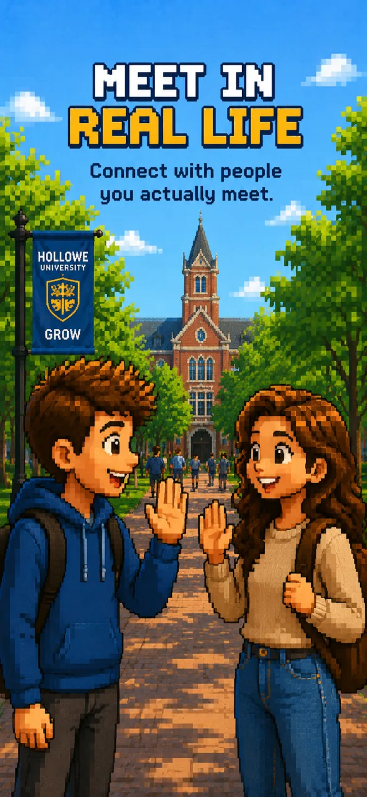
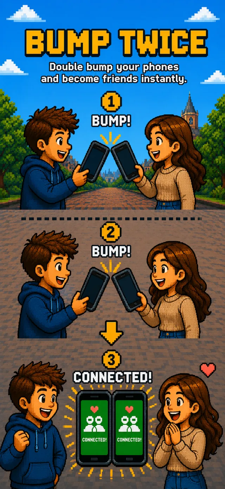
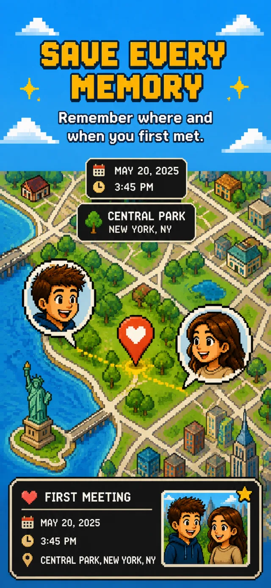
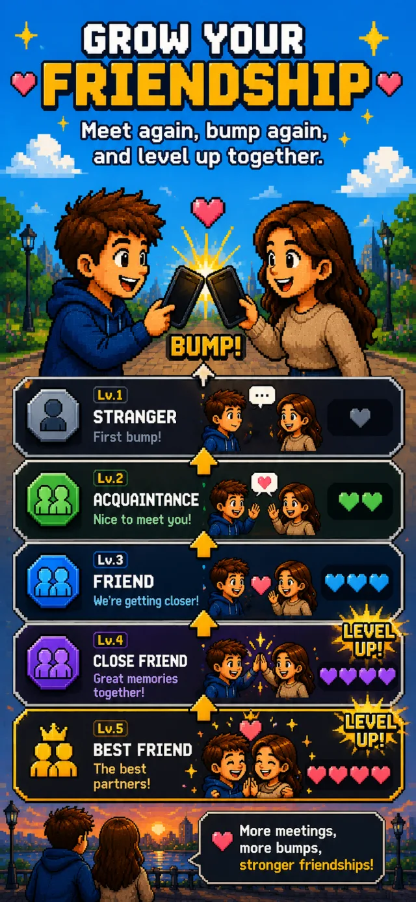

DOUBLE
BUMP
Meet. Bump. Remember.
Connect with people you actually meet. Just bump phones twice — that's it. Then record and keep that moment.
At school, on trips, or at meetups.
This is what it looks like.
Real footage, not a mockup. Both of you open DoubleBump and bump phones twice — that's the whole interaction.
Online, we're connected.
But what do we remember?
Adding a friend online takes a second. But remembering who you actually met — and when, and where — isn't so easy. It fades. A new classmate, someone from your club, a person you met once and let slip away. DoubleBump started with that problem: not how connected you are online, but remembering the moments you actually shared.
Meet. Bump twice.
And keep the moment.
DoubleBump is a mobile app for two people who actually met. Tap your phones together twice to connect — and the meeting itself is saved.
Two people open DoubleBump and tap their phones together twice. That double bump is the one action that proves you actually met.
The bump lands and you're connected. Profiles open up — along with the social links you chose to share, like Instagram or X.
The date and the place of the bump are saved. Months later you can still see who you met, when, and where.
Meet the same friend again and bump again. Every meeting adds to the record, and your friend level goes up together.
Most connection apps stop at swapping contacts. DoubleBump doesn't — meet again, bump again, and the record keeps building.
Three steps.
One real connection.
See DoubleBump in action.




Your real-world social map.
Every bump builds a permanent memory. See your connections, where you met, and every moment you've shared.
A closer look inside.


The experience we're building
Make meeting someone fun again
Instead of asking for a name or an account, just ask: “Want to DoubleBump?” Two phones tapping twice turns adding a friend into a small game — and an easy icebreaker.
Let real meetings build the relationship
It doesn't end at a name on a list. Meet again, bump again — the count grows and your friend level rises with it. Real meetings move a relationship forward, not online activity.
Remember the moment years later
Moments with friends fade faster than you'd think. Every bump keeps a person, a time and a place — so one day you can look back and say, “That's right, we met here.”
Three layers of real-world verification.
A connection can only happen if all three layers pass simultaneously.
Frequently asked questions
How does DoubleBump work?
Both users open DoubleBump and tap their phones together twice. Bluetooth confirms you're close enough to touch, motion sensors confirm both phones felt the same real impact, and the double-tap confirms you both meant to connect. All three have to line up, so accidental bumps and remote faking aren't realistic.
Does DoubleBump work between iPhone and Android?
Yes. The cross-platform BLE protocol is live — iPhone and Android users can bump with each other. DoubleBump uses Bluetooth Manufacturer Data to detect cross-platform devices reliably.
What happens after I bump someone?
Both screens glow yellow and you feel a haptic response. The connection is permanently saved on your Memory Map with the location where you met. You can add a photo and a 100-character note (Encounter Memory) to capture the moment. No feed, no algorithm — just your private map.
What are relationship levels?
Six levels unlock as you keep bumping the same person: Stranger → Acquaintance → Friend → Close Friend → Best Friend → Soul Mate.
Can someone fake a DoubleBump connection remotely?
Realistically, no. Bluetooth requires the phones to be close enough to touch, and the motion sensors need to register the same real-world bump at the same moment. Without both people actually being there and tapping phones together, those checks won't line up.
Is DoubleBump free?
Yes. DoubleBump is free to use on iOS and Android.
Real meetings shouldn't just disappear.
DoubleBump isn't a friend-adding app or a contact-swapping service. The more of our relationships move online, the more the time we spend together in person is worth keeping. The day you first met. The day you practiced together. The friend you saw every week. The place you travelled to. Each small bump you leave behind adds up to the record of one friendship.
DoubleBump is an app where meeting a friend and recording that moment is how the friendship grows.
Meet. Bump. Remember.
Ready to bump?
Free on iOS and Android.